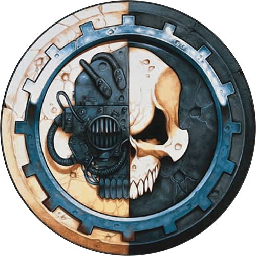
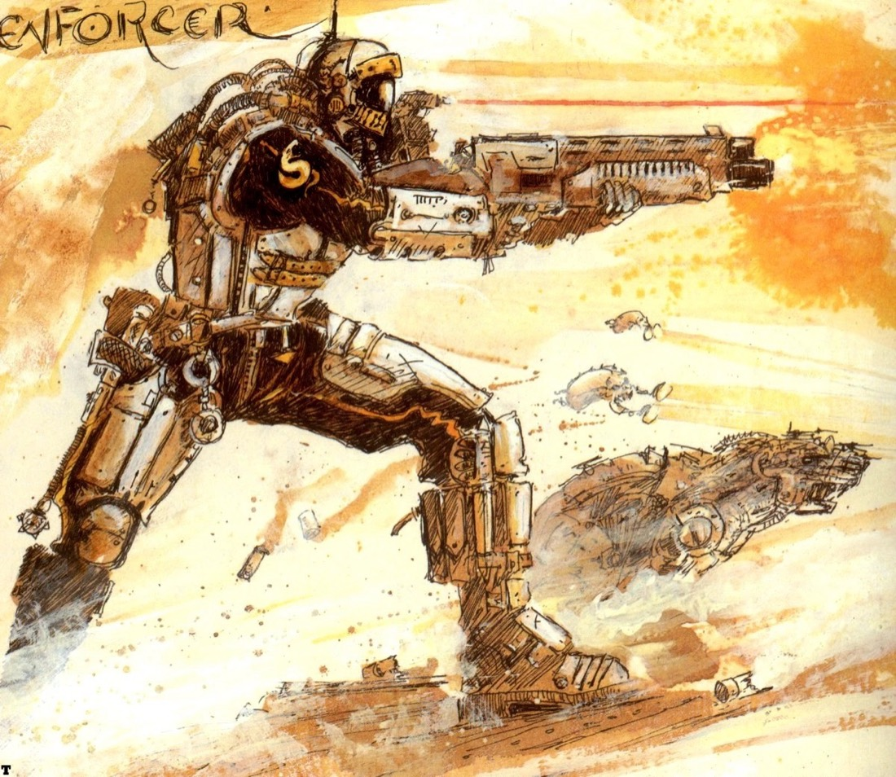
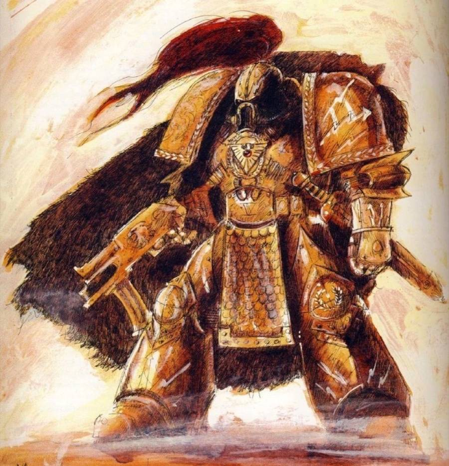

Unification Wars
| Unification Wars | |
|---|---|
| Part of the end of the Age of Strife | |
 A Thunder Warrior in Mark I power armour, from a mural in the Imperial Palace Artwork © Games Workshop | |
| Date | Late M29 to c. 712.M30 (the final battle at Mount Ararat is dated 669.M30 in some records) |
| Location | Terra; later Luna and Mars |
| Result | Terra united under the Emperor of Mankind; the first Imperial state |
| Belligerents | |
| Imperial side  The Mechanicum of Mars (from 739.M30) | Terran warlordsPan-Pacific Empire of Narthan DumeKalagann of Ursh and the Nordafrik ConclavesYndonesic Bloc of Cardinal TangTechno-barbarian states with cyber-augmented armies |
| Commanders and leaders | |
| Narthan DumeKalagann of Ursh †Cardinal Tang | |
| † Killed in action | |
| Units involved | |
| Armies of cyber-augmented fighters, with remnants of Dark Age technology | |
| Strength | |
| Warlord armies of dozens of states; battles of weeks with millions dead | |
| Casualties and losses | |
| Hundreds of millions, by the Palace archive's estimate | |
| Mountains levelled and continents broken in the battles; the Himalazian war-zone left in ruins | |
The Unification Wars, also the Wars of Unification, the Unity or the Unification of Terra, were the series of campaigns in which the Emperor of Mankind conquered the warring states of Terra and ended the Age of Strife on the cradle world. They began in the late 29th millennium and ended in the early 30th, in a year that Imperial chroniclers fix at 712.M30, although several records place the final battle earlier.[2] They gave the Emperor a world, an army, a banner and a government, and are accepted as the foundation of the Imperium of Mankind.
The wars were fought by the Emperor's genetically engineered soldiers, the Thunder Warriors, and by the Adeptus Custodes, the Emperor's own warrior-guard, who are first recorded in this era. Against them stood the warlords of Old Night, who commanded armies of cyber-augmented fighters and were equipped with the remnants of ancient technology. In the course of the wars the Emperor revealed himself to the people of Terra, took the title that Imperial history now gives him, and secured the alliance of the Mechanicum of Mars.[2]
The accepted account today differs from the version taught for ten thousand years. The older Imperial record held that the Thunder Warriors all died heroically at Mount Ararat, bearing the Emperor's banner to the last. Testimony released by the Adeptus Custodes and now corroborated by Mechanicum and Palace archives holds that the Thunder Warriors were deliberately destroyed by the Emperor's order once their task was done.[1]
Background
[edit]By the late 29th millennium, Terra had been a battlefield for some two and a half thousand years. The planet's former unity had dissolved into dozens of states and nomad tribes, whose rulers fought with the debris of the Dark Age of Technology and with weapons of mass destruction that had left much of the surface a wasteland. Warlords such as Kalagann of Ursh, Cardinal Tang of the Yndonesic Bloc and the half-mad, half-genius Narthan Dume of the Pan-Pacific Empire held sway over large territories. A few were corrupted by Chaos, and at least one lord of the Strife was served by a daemonic power.[2]
The Emperor, who the Imperial Cult says had walked among Mankind for many thousands of years under many names, judged that the Strife could be ended only by force. He had for centuries conducted research in hidden laboratories beneath the Himalazian mountains, and in the Selenar gene-halls of Luna, where he produced the first soldiers able to beat the warlords' armies.[2]
Forces
[edit]Thunder Warriors
[edit]
The Thunder Warriors (Latin Legiones Cataegis) were the Emperor's first genetically engineered warriors. They were made from adult volunteers and conscripts by means of surgical and chemical alteration, gene-sculpting and muscle grafts, and encased in Mark I power armour, the first suits of the kind. Their power was greater than that of the later Legionaries, but their minds and bodies were less stable, and the augmentation was prone to burn out within a few decades.[2] They marched under the Raptor Imperialis, an early banner of a raptor's head and lightning, and served in regiments sometimes called Thunder Legions, each led by a captain called a primarch, a title later given to the Emperor's sons. Their best-known champion was Arik Taranis, the "Lightning Bearer".[1]

Custodians
[edit]The Adeptus Custodes, first recorded in the Unification, were the Emperor's chosen guards. They were taller, stronger and better trained than the Thunder Warriors, and their captain-general, Constantin Valdor, acted as the Emperor's lieutenant on the field. The Custodes were the only soldiers capable of defeating the Thunder Warriors in open battle.[1]
Imperial Army
[edit]From the start the Emperor also fielded less powerful but more durable regiments of enhanced soldiers, the geno-infantry of the Unification. Some of the oldest, the "Old Hundred", marched on in later years and were present at the beginning of the Great Crusade.[3]
Course of the wars
[edit]The conquest
[edit]The Emperor took the field first in the late 29th millennium. Warlord after warlord was crushed, and those who submitted were allowed to retain a measure of rule, while those who did not were destroyed. The Ninth Battle of Xozer, in 992.M29, saw the death of Kalagann of Ursh in the Nordafrik Conclaves, amid psychic phenomena that the sources cannot explain.[2] Cardinal Tang's holdings were overrun, and the Pan-Pacific Empire of Narthan Dume, the most infamous of the tyrants, was dismantled in a long war.
The battles were on a scale that later scholars refused to believe. The sources describe engagements that ran for weeks, with casualties in the millions, in which mountains were levelled and continents broken. Such accounts have been dismissed as exaggeration, but the surviving ruins of the Himalazian war-zone and the later survey of the Terran crust are consistent with them.[2]
Alliance with Mars
[edit]In the course of the wars the Emperor turned to the Mechanicum of Mars. The priests of Mars, who held an old and jealous independence, were offered an alliance by force of persuasion and by the prospect of new technologies. The agreement, the Treaty of Olympus of 739.M30, bound the Red Planet to the Emperor in return for recognition of its autonomy. Mars's forges gave the Emperor the means to equip the crusade to come. The priests, for their part, regarded the Emperor as the living embodiment of the Omnissiah.[2]
The last battle
[edit]The last battle of the wars, fought in the Kingdom of Urartu at Mount Ararat, is dated 669.M30 in some records and in others a generation or more later. It was here, according to the older Imperial chronicles, that the last Thunder Warriors fell. Taranis was said to have raised the banner of lightning at the proclamation of the Unity, and to have died of his wounds. A formal declaration of victory followed, and the Emperor was acknowledged as ruler of Terra.[2]
The fate of the Thunder Warriors
[edit]The accepted account of what followed is far darker. The Thunder Warriors had been created as weapons and were poorly suited to peace. Their bodies failed and their minds were prone to rage and madness, and many survivors were growing dangerous to the order the Emperor was building. At first he simply did not replace them. When the war ended he ordered their destruction, and the Custodes, who alone could do it, carried the order out. At the same time the Emperor needed the record to show that he had won Terra himself, and had done so with warriors who had died in glory.[1]
Some Thunder Warriors survived. A group under the primarch Ushotan took part in an attempted coup in the Imperial Palace, led by a former Provost Marshal, in the final years of the wars (c. 700.M30),[a] hoping for revenge and an honourable death; the rebels were killed by the first Space Marines to appear in open battle, and Ushotan fell to Valdor. Others went into hiding. Some of these were hunted down by the first Astartes. A band calling themselves the Dait'Tar took part in the Cerberus Insurrection in the early crusade (c. 800s.M30), and slew several times their number of the World Eaters before being overwhelmed.[1] Arik Taranis himself is said to have lived on under assumed names into the Horus Heresy.
Aftermath
[edit]With Terra united, the Emperor consolidated his rule. He enforced the Imperial Truth, a rationalist ideology that rejected all gods and spirits, and replaced the surviving religions with the work of the Iterators. He raised the Imperial Army and, in hidden laboratories, carried on the work, begun in about 550.M30, that produced the first Space Marines; the first Legions were raised in about 700.M30 and fought their first campaign, the Pacification of Luna, in 703.M30.[b] When he had finished, he turned outward.[2] In 798.M30 the Emperor's fleets left Terra on the Great Crusade.
Legacy
[edit]The Unification Wars are remembered in the Imperium as the founding war, and their iconography has endured. The lightning bolt of the Thunder Warriors survives in the heraldry of several Chapters and in Custodian regalia. The banner of the Raptor is the forebear of the Imperial Aquila. Veterans of the wars' regiments are honoured in the oldest units of the Astra Militarum.[3]
The unmaking of the Thunder Warriors left a more troubling legacy. The Emperor's willingness to sacrifice his creations to the plan was noted by those who later pondered the fate of the Space Marine Legions, and by those who study the Heresy. The Custodes have never forgotten what they were asked to do.[1]
Timeline
[edit]| Date | Event |
|---|---|
| Mid-M27 – late M29 | Some 2,500 years of war among the techno-barbarian states of Terra in the Age of Strife. |
| Late M29 | The Emperor takes the field with the Thunder Warriors and the first Custodians. |
| 992.M29 | Ninth Battle of Xozer: Kalagann of Ursh slain in the Nordafrik Conclaves. |
| Early M30 | The holdings of Cardinal Tang and the Pan-Pacific Empire of Narthan Dume are overrun.[c] |
| c. 550.M30 | The Emperor begins the Space Marine project beneath the Himalazian mountains. |
| 669.M30 | Battle of Mount Ararat in Urartu; in the older record, the last stand of the Thunder Warriors. |
| c. 700.M30 | First Founding of the Space Marine Legions. Ushotan's Thunder Warriors join the Palace coup and are destroyed; the Culling of the Thunder Warriors.[d] |
| 703.M30 | First Pacification of Luna by the early Legions. |
| 712.M30 | The Unity proclaimed: the Emperor declares the Unification of Terra complete. |
| 739.M30 | The Treaty of Olympus binds the Mechanicum of Mars to Terra. |
| 798.M30 | The Great Crusade begins. |
| c. 800s.M30 | The Dait'Tar Thunder Warriors fight in the Cerberus Insurrection against the XII Legion. |
See also
[edit]Notes
[edit]References
[edit]- ^ a b c d e f g Abnett, Dan. Horus Rising (novel). Black Library, Part 1, Ch. 7, pp. 69, 118, 194, 261-264. McNeill, Graham. False Gods (novel). Black Library, pp. 7, 9, 39, 59, 68, 127, 320.
- ^ a b c d e f g h i j Counter, Ben. Galaxy In Flames (novel). Black Library, pp. 20, 39-40, 68, 77. Swallow, James. Flight of the Eisenstein (novel). Black Library, pp. 20, 92, 283.
- ^ a b McNeill, Graham. Fulgrim (novel). Black Library, pp. 8-9, 48, 101, 147, 164, 183-184, 193, 216, 307. Abnett, Dan. Legion (novel). Black Library, pp. 10, 89.